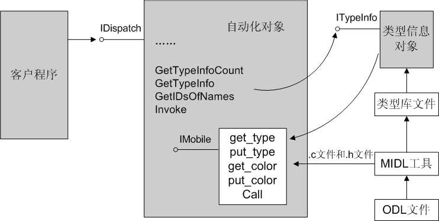

基于JavaScript/XML和COM组件的MFC三层架构实例
需求分析
在软件工程领域，软件维护周期是软件生命周期中持续时间最长的阶段，占到整个生命周期的70%，而其维护成本占到总成本的约80%。
目前，很多技术方法用于增强软件的可维护性，其目的是通过最小的成本适应用户的变化。这些方法包括:A)结构化技术；B)使用更高级的开发语言；C)使用例行程序包； D)使用脚本等。
其中，方法A和B针对源码级维护。采用方法A和B方法，当业务流程发生改变，需要要对原有软件的部分代码作更换。方法C只允许在特定的系统上使用。在某些情况下， 如某些操作系统下，或在嵌入式硬件环境下，无法实现。使用方法D，即使用脚本构造软件， 可以做到在一般系统上，灵活改变软件的功能，达到维护扩充的目的。
用户界面设计
这个硬件测试工具软件取名为DNA_Bridge_Demo.exe，是一个标准的Windows 风格的应用程序，如图
主界面右侧的一块列表框ListBox区域用于显示当前操作的日志内容，其下方的文本框EditBox用于显示当前图像文件的所在路径，其上方的一排按钮是设备通用动作，用来响应用户的操作指令。这些按钮的功能定义如下：
按钮"设置参数"SetParam：设置设备参数与日志参数。
按钮"打开" Open：打开设备。
按钮"复位" Reset：复位设备。
按钮"取状态" GetStatus：获取设备当前状态。
按钮"关闭" Close：关闭设备。
按钮"清空" Clear：清空日志。
按钮"退出" Exit：退出程序。
按钮"关于" About：用于弹出一个消息框，说明本软件的版权、版本等信息。
概要设计:基于JavaScript/XML/HTML/CSS/COM组件快速开发框架
除了上述的用户界面（UI，User Interface）设计之外，在内部实现上还要求将 UI逻辑和商业应用逻辑分离（这里的商业应用逻辑就是图像处理功能的实现）——这是很多优秀的商业软件都采取的一种设计方法。采用这种方法，不仅可以使程序的结构清晰，还有利于代码重用。因为同一款软件的不同升级版本往往会使用不同的用户界面，但其商业逻辑相对来说保持了一定的稳定性。在这种情况下，商业逻辑的实现是可以重用的，这将大幅提高升级版本软件的开发效率。
应用后端：商业逻辑：脚本语言技术层：基于JavaScript脚本构建事务过程，直接满足现场需求，灵活定制交互设计。
应用前端：基于HTML解析生成前端窗体；
API接口层：基于C++的低耦合插件系统，提供贴近硬件驱动层和系统底层的API供JS调用。根据 UI 逻辑与商业逻辑分离的原则，开发各个插件。
平台核心为脚本解析与执行引擎，插件路由分发引擎，HTML解析与窗体渲染模块。基于MFC与COM机制。
脚本构建的插件平台
XML作为内部数据交换语言
做好分离，把大量的运算交给JS，把HTML当成读库、写库工具和XML/JSON输出工具即可。
UIEngine介绍
CUISkinXmlReader是HTML/XML文件解析类，实现的主要功能是：获取主窗口使用的是哪个皮肤文件；获取主窗口中各个按钮（以按钮的名字为关键字进行检索）所使用的皮肤文件以及按钮所在位置的 X、Y 坐标。另外需要注意，CUISkinXmlReader 类的对象被实现为了一个“单件”（所谓单件，简单来说就是系统中最多只存在一个 CUISkinXmlReader 类的实例；各个需要读取 XML 信息的对象共用这个单件实例）。
为了让窗口支持皮肤，需要开发自定义的窗口类，这些类的继承结构参如下图。其中，
CSkinObject 类主要负责皮肤图片文件的读取（生成一个 GDI 位图以便显示到窗口区域中），
CSkinButton 是一个支持皮肤的按钮类，
CSkinDialog 是一个支持皮肤的对话框类。
并且 CSkinButton 类和 CSkinDialog类都从 CSkinObject 类继承而来。
CSkinObject、CSkinButton、CSkinDialog 类的完整实现参见代码
Active Scripting技术
Active Scripting 是微软公司提供的一种脚本解析技术，是 ActiveX 技术的一个重要组成部分。它支持解析两种脚本语言：VBScript 和 JScript。
Active Scripting 技术的应用涉及到两个主要的部分：脚本引擎（ScriptingEngine）和宿主程序（Scripting Host）。其中，脚本引擎以组件的方式提供服务，它封装了比较底层的、很细节化的脚本程序处理功能，包括语法分析、语句执行等等；并且开放了一些必要的接口，使得使用它的宿主程序可以很方便地与它进行交互。而宿主程序就是我们要开发的应用程序，它是脚本引擎的客户（或者说使用者），所做的工作包括：
创建并管理脚本引擎的实例对象。
实现一些特定的接口供脚本引擎回调（脚本引擎通过这些回调接口从宿主程序获取类型信息、通知脚本引擎的状态改变、通知脚本解析时发生的错误等等）。
装载脚本程序，并把它们传递给脚本引擎进行解析。宿主程序、脚本引擎和脚本文件三者之间的关系如图。
更具体来说，使用Active Scripting 进行脚本解析的整个协作过程典型如图。

制定脚本接口标准
开放给脚本程序一个顶级的Application 对象。这个Application 对象表示看图软件这个主应用程序，它包含一个 mainWindow子对象来代表主窗口，包含一个 imageProcessor子对象来代表图像处理器组件（软件实现的商业逻辑都要以组件的形式提供服务），还包含一些控制函数，比如获取一个图像文件、保存一个图像文件、最小化主窗口、关闭应用程序等等。其中，mainWindow 对象还包含了一个buttons 数组，便于脚本程序访问主窗口中的各个按钮；imageProcessor对象开放了对图像进行各种操作的接口。
作为脚本接口的说明书，应该有一个规范的描述文档。因为脚本程序员是直接根据这个文档来开发脚本程序的，因此文档的规范性和准确性非常重要！而从程序的功能实现来看，我们也会使用 IDL语言来进行脚本对象的描述
创建新属性或方法并开放给脚本交互
为了解析上述脚本代码，我们需要做如下实现：
• 使用 IDL语言来描述 MediaPlayer对象
• 实现 MediaPlayer 对象
• 在宿主程序中创建、管理 MediaPlayer对象，并让它与名字项“MediaPlayer”关联
名字项代表的是顶级对象。解析顶级对象已经不成问题了，但如何来解析顶级对象 后面的次级对象呢，比如“Application.car.engine.brand”？大家知道，在 Active
Scripting 中所有脚本对象都实现为自动化对象。理解这一点非常重要！这就要求我们在
脚本程序访问次级对象时，让宿主程序返回一个该次级对象的 IDispatch指针；另外，当
脚本程序通过特定的方法显式地创建一个对象时，我们也应该返回这个对象的 IDispatch
指针。作为本节的演示，待解析的脚本代码如下：
// 开放给脚本程序的属性和方法。在Active Scripting中，能够跟脚本 程序交互的对象都要支持COM自动化。因此，我们需要给ImageProcessor对象提供一个 自动化的“外壳”（也就是一个包装对象）。不仅如此，Application、MainWindow、 Button等对象也都分别需要一个自动化的“外壳”。
在IDL文件中添加新方法/属性
interface IButton : IDispatch
{
[propget] HRESULT id([out, retval] BSTR* value);
[propget] HRESULT enabled([out, retval] BOOL* value);
[propput] HRESULT enabled([in] BOOL value);
// Methods
HRESULT focus();
}编译IDL文件
在CButtonWrapper.h/.cpp中实现该方法
// APIs exposed to scripts
STDMETHODIMP get_id(BSTR* value);
STDMETHODIMP get_enabled(BOOL* value);
STDMETHODIMP put_enabled(BOOL value);
STDMETHODIMP focus();;
STDMETHODIMP CButtonWrapper::focus()
{
if (mButton)
{
mButton->SetFocus();
return S_OK;
}
return E_FAIL;
}需要把 CImageViewerDlg::OnInitDialog()最后的return TRUE; 改为return FALSE;
BOOL CImageViewerDlg::OnInitDialog()
{
...
return FALSE; // return TRUE unless you set the focus to a control
}
编译ImageViewer.idl，生成ImageViewer.tlb。
在main.js中加入调用代码：mainWindow.buttons["btn_Open"].focus();
相关源码与书籍文档
列表：
本书纵观了软件开发在不同发展阶段的特点，揭示了当今在很多大型应用软件设计、开发过程中采用的一种部署模式，引出了一种称之为“脚本驱动的应用软件”的开发方法。这种方法可以促进软件开发过程中的团队分工与合作，提高软件开发的效率，提升应用软件在可定制性和交互性方面的表现。在传授方法的同时，本书更结合以递进式的实例，使得方法更容易理解、更贴近于实际应用。在开发脚本驱动的演示程序时，还介绍了XML解析、JavaScript解析等多种实用的编程技术。
一是自始至终贯穿的三个案例不是相互孤立的，可以说这是同一个软件的1.0、2.0和3.0版本，使读者更真实地体会设计改进的脉络——这三个案例分别是看图软件、可定制的看图软件、脚本驱动的看图软件，二是以实际的应用开发为背景，将多种技术融合得非常自然。XML、JavaScript、COM、ActiveScripting等，均出现在架构中适合它们的位置。
三是不仅代码精良，OOP得漂亮，在OOD设计方面也有颇多亮点。仅举一例。我所著的《软件架构设计》（2007年2月面世）的“第19章 突破OOP思维：继承在OOD中
脚本控制
稍微上一点年纪的程序员都使用过DOS操作系统，那个操作系统所有的操作都是通过键盘往里敲字符实现的，用得很不方便。后来有了图形界面操作系统，比如Windows，让很多需要看着键盘才能敲出字来的人彻底解放了。在Windows上绝大部分软件只需要用鼠标在屏幕上点点划划就能操作了，而且还支持多任务，同时运行好几个软件。
但即使是图形操作系统也不能完全摒弃文本控制方式，所以每版Windows都保留着DOS操作模块，另外Windows上有很多实用的小工具如网络配置工具等，都没有图形界面，只能用DOS方式操作。很多优秀的软件也都有命令操作功能，如Office系列软件的宏命名，AUTOCAD的函数命令等，命令操作功能是文本控制方式中较简单的一种，本文重点讨论的是文本控制方式中较高级且较复杂的一种－脚本控制。
脚本，就是能用来解释执行的文本，能够解释执行就必须遵循一定的语法，使得解释器能够看得懂，这样脚本就具备编程语言的性质了，脚本所遵循的规则被称为脚本语言。常用的脚本语言有JavaScript，VBScript， ASP，JSP，PHP，SQL等。脚本是命令的集合，典型的应用是AUTOCAD软件的AUTOLISP脚本，AUTOCAD是一个画图软件，画每一个图形都有相对应的函数命令。那么AUTOLISP可以把所需要画的图形对应的函数命令列在一起统一执行，比如画一个简单的油罐车，可以由画圆形（车轮子）、梯形（车头）、长方形（车板）和椭圆柱形（油罐）组合起来，实现高度的自动化，“AUTO”CAD绝对是名副其实的。由此看来由命令组合实现自动化还是比较靠谱的，想想怎么把在屏幕上点点画画这些动作组合起来实现自动化呢？是不是无法可想？并非是不可实现，Office中的宏录制功能就是这样做的，但毕竟太过复杂，而且录制的宏最终还是转化为了文本，从这一点看文本控制方式在很长一段时间内还是比较有优势的。
下面，看看如何让自己写的程序实现文本控制，或者说一步到位，实现脚本控制吧。
脚本控制系统理论上是由三部分组成：被控系统、脚本和脚本引擎组成，举一个简单的例子，被控系统好比是演员，脚本就是剧本，而脚本引擎则是导演，那么写脚本的程序员呢？当然是编剧了。现在，编剧有好点子了，他写出了一个优秀的剧本，然后编剧拿着这个剧本去找导演：你找几个演员，让他们按着这个演！于是，导演就照着这个剧本指挥了：张三，你这么做动作，李四，你给我背这个台词！现在整个戏班子人员都是固定的，这场戏演得怎么样就看这个编剧写的剧本怎么样了。相对于实际系统就是，软件的资源就是这些了，有这函数那函数的，每一个函数实现一个固定的功能，那么脚本怎么组合就是脚本程序员的事的，脚本程序员写脚本，写完脚本交给脚本引擎来执行，脚本引擎根据脚本内容来控制函数的执行。整个脚本控制系统就是这个样子的。
这三部分的相互关系是如上所说的，同时脚本控制系统对这三部分都是有要求的，先说对脚本，当然是脚本必须符合脚本语言的规则，如果不符合规则，就一定不能执行下去，或者说执行不出我们所要的结果。其次，脚本引擎，脚本引擎是脚本控制系统的核心，它负责解释脚本并控制系统的运行。由于其是核心，所以它的复杂度是最高的，一般的程序员写不出来，我们一般用已经写好了的，并且经过无数人验证测试过的脚本引擎，那就是Windows自带的脚本引擎，包括VBScript引擎和Java Script引擎，足够稳定，足够强大。最后说被控系统，对于设计软件的人员来说，这部分是关键的了，因为脚本的质量是由使用软件的程序员来保证的，脚本引擎的质量是由Windows来保证的，对于我们（软件设计人员）来说只能去保证被控系统（也就是软件的可用脚本来编程的部分）的质量了。
不是每个人都能够担当演员的角色，不是所有的软件都能由脚本来控制，从普通人到演员需要有一个培训和包装的过程，使其能够看得懂剧本，听得懂导演的指令，同时演出来是那么回事。脚本控制软件也一样，一定要实现一种接口，即脚本控制接口：IActiveScriptSite,实现了这个接口的程序才能够被脚本引擎访问其函数，IActiveScriptSite中有一个很关键的函数，GetItemInfo,脚本引擎正是通过调用这个函数来获得它所要调用的函数及对象信息的。比如一个窗口上有一个指示灯，脚本引擎要想控制这个指标灯，让它亮或者灭，必须调用GetItemInfo来获得这个指示灯的相关信息，从而达到控制的目的，而被控系统要想脚本引擎能够控制它，则要在GetItemInfo这个函数中实现“提供指示灯的信息”这方面的内容。除此之外，“指示灯”这个词在脚本语言中不是一个专有名词，如果不加以说明的话，会被当成错误的脚本输入，所以在加载脚本引擎之后，要告诉脚本引擎，“指示灯”这个词是一个东西，你可以去访问它。这个过程是通过调用脚本引擎的AddNamedItem函数来实现的。
除了访问对象，调用函数这些动作外，四则运算以及字符串操作等基本功能都是脚本引擎都能够掌握的，也当然是写脚本的程序员能够掌握的了。
基本的脚本控制框架，只能说到这里了，整个架构是基于万能的COM体系统结构之上的，COM结构，是一个无比强大的体系结构，当今流行的架构如DCOM、.net平台，无不由其发展而来。脚本控制的说明，有人用一本书来写，都写得不是很明了，而对于COM，其复杂性用一篇文章来描述，更是都不及它的万分之一。因此对这篇文章感兴趣的同学可以参考一下陆其明写的《脚本驱动的应用软件开发方法与实践》，当然，对COM不熟悉的同学，更是应该先简单了解一下。
使用脚本实现设计和性能的平衡
众所周知，各种语言都有各自的特点，有的语言可以通过动态类型或动态闭包之类的特性为我们带来好处。许多资料都介绍了如何通过特定语言中的具体特性来简化编程，或者使用应用程序具有炫酷的功能，如此等等。但是，用户可能只会使用脚本实现 Java 应用程序中的一部分，因此这里有一个经常被人忽略的问题：应该在何时以何种方式使用脚本语言？
使用编译语言开发软件应用平台前端的不足
因为驱动程序与应用程序编译在一起,编译时间较长,编译产生的Imag/较大,不利于调试"
软件升级时,必须重新编译应用程序,且在部署时可能需要重新启动,升级比较困难"
使用C/C++进行机顶盒应用程序的开发,对现场实施或开发设计人员的要求比较高"C/C++开发的应用程序如果出错,有可能导致操作系统异常严重时可能导致死机
脚本语言的特性
1.跨平台(主流的操作系统上都会提供这些脚本语言的虚拟机)
2.易维护(脚本语言的编程范式是函盖多种的,过程式,函数式,对象式等,开发者可以利用脚本语言写出各种范式的代码,简洁性不可少,学习的坡度比较易,维护也就相对的简单)
3.开发效率高(前期是比较低一点,但是项目代码的膨胀,相对C++是比较高的了,想一想,C++的异常处理现在有多少程序员能说是掌握的)
事务脚本开发
我们先试图分析下软件越来越复杂的原因。我们最习惯的一种业务开发方式是： 定义各种Service封装业务逻辑，我们称为业务逻辑层。
有问题吗？在业务逻辑变得很复杂之前没有问题，甚至可以说这是一种很好的方法，但在业务复杂度变高后，可能会出现一些复杂度不受控制的问题。这种开发方式被叫做事务脚本的开发方式。
下面我们从一个产品需求的变更看这种方式的局限性。
在前期，我们分析产品需求，按照产品需求设计出流程， 流程被设计到各种方法里， 每个方法看起来简单自然，每个方法只做一件事情，一切都很好。
随着时间推进，流程变得复杂，我们不得不拆解这些功能，拆解的原因有很多：
为了代码重用
为了方法可读性
仅仅是个人习惯
如果复杂度停留在这一个阶段， 情况还不算糟糕， 事实上我们很多项目复杂度就停在这个阶段。
时间再推进，慢慢出现的一些问题：
这个功能可以用到原来流程的A，但是又有一点小区别，那我是再写一个还是加个参数处理下呢？
我之前拆解的功能B，现在看来好像有点问题，我想调整下但是会不会影响别的功能呢，如果影响是再写一个还是加判断处理呢？
这个方法就是我要的功能， 但是它有一次发短信操作，我加个判断把发短信屏蔽下吧
软件复杂度变得越来越高后，有很多因素会诱惑你加快复杂度的增加：
这个功能比较着急，但是我不确定改了会不会影响别的地方，复制改下吧
这个方法里面这些判断是做什么的，不管了，复制下吧
这个功能单元测试明明OK怎么不行呢， 我擦里面怎么多了个判断， 这个分支没覆盖到！
软件复杂度的增加不是线性的，随着时间的推移，如果缺乏有效的管理，复杂度会急剧增加
事务脚本的特点：
开发简单，过程式的代码，容易开发，但是复杂度容易失控
过程式，即使你定义了class，也不能否认它过程式的本质，过程式本来没有问题，因为大多数web流程就是过程式的：取几个数据，格式化一下，再加个缓存。
事务脚本的方法可以相互调用，无层次依赖，最终形成一种复杂的网状调用关系
业务逻辑分散在各处，被实现为各种不同的功能方法， 这些方法并不知道自己属于哪个业务
业务逻辑，存储层逻辑，外部服务调用混杂在一起
事务脚本大多数情况下是一种很好的开发方式，特别是对于以读为主写逻辑不是很复杂的应用
我们看企业应用架构模式中强调的一句话"使用过程来组织领域逻辑"，其实事务脚本就是从过程的角度看待需求，需求方和开发方在此阶段都热衷的核心是"这个功能是怎么个过程"，二者达成一致后用代码去将这个粗糙的过程模拟出来。所以大多数人都在不自觉的应用事务脚本模式。简单说就是使用过程化的代码在模拟用户表面的需求。如果这个项目继续进行下去，那么问题来了：
（1）用户自己都不太清楚需求，需求肯定会随着用户的想法变化而不断变化。即使你作为需求方如果不仔细思考，只是简单的陈述下表面的流程，你也会经常性的由于自己偶尔的深入考虑或更没谱的想法而不断的变更需求。
（2）事务脚本模式的代码是过程式的，需要什么调用什么，常见的数据源通信、邮件服务、应用级别的日志安全等各种代码都混合在一起，如果需求变了，调整起来很困难。
这就是很多项目的一般状态，因为问题的根源在没有深入分析和理解用户的需求，所以不是用什么框架和分层，搞一些似是而非的实体或者采用了IOC和AOP等技术实现能起作用的的。还是要从根源上寻求解决之道，因此领域驱动设计强调通用语言，这样才能同需求人员一起对具体的领域进行深入的分析，这样的需求分析和模型设计具有更高的稳定性，才不会因为需求方的脑抽和风暴导致需求频发大幅度变化。
一旦你了解了事务脚本模式的核心，你就十分清楚事务脚本的适用范围：
（1）领域逻辑本身就是多个简单过程。
（2）需求十分简单，即使看起来表面化也已经足够深入。
前后端构架的分离
代码页面分离模式的好处是页面展示部分和逻辑控制部分的代码分离开来，便于管理和维护，是推荐的开发方式。
程序代码与页面构架的分离是WEB程序员多年的梦想。在ASP.Net出现之前，无论是ASP、PHP还是JSP，程序代码与HTML代码都是混杂在一起的，这种做法，虽然在WEB技术初期受到赞扬，但是随着时间的的推移，它的弊端是越来越明显，当程序代码很长时，HTML代码与其混在一起，阅读起来就是个灾难。
而新技术ASP.Net则通过Codebehind、用户控件(User Control)以及自定义控件(Custom Control)等方法真正做到了代码的分离。这是一个了不起的进步，大家可以在本文中看到分离代码后的ASP.Net程序的结构是多么的清晰。
前后端分离的要求：
前端静态化
前端有且仅有静态内容,再明确些,只有HTML/CSS/JS. 其内容来自于完全静态的资源而不需要任何后台技术进行动态化组装.前端内容的运行环境和引擎完全基于浏览器本身.
后端数据化
后端可以用任何语言,技术和平台实现,但它们必须遵循一个原则:只提供数据,不提供任何和界面表现有关的内容.换言之,他们提供的数据可以用于任何其他客户端(如本地化程序,移动端程序).
平台无关化
前端3大技术本身就是平台无关的,而后台连接部分的本质是实现合适的RESTful接口和交互Json数据,就这2者而言,任何技术和平台都可以实现.
构架分离化
前端架构完全基于HTML/CSS的发展和JS框架的演变,与我们耳熟能详的后台语言(如C#, Java, NodeJs等)完全无关. 由于前台是纯静态内容,大型构架方面可以考虑向CDN方向发展.
后端构架几乎可以基于任何语言和平台的任何解决方案,大型构架方面, RESTful Api可以考虑负载均衡;而数据,业务实现等可以考虑数据库优化和分布式,这些领域园内大牛如云,就不再班门弄斧了.
但总而言之,前后端的分离也实现了前后端构架的分离.
编译成VC6版本时解决的问题
既然从技术层面上说本框架是.net框架在windows DNA/COM时代的降级版，那就需要使用XP/2000/WIN7这些旧电脑自带的VC6运行时版本来运行来编译本框架，这样就可以具有通用性。
Q:如何根据OCX(DLL)生成tlb文件(类型库)
A：有两种方式可以根据OCX生成tlb文件：
1.开始运行oleview调出OLE/COM Object Viewer.
这个工具是微软提供的，在VC6中和Windows SDK中都有。
找到要用的COM组件，比如说VBSrcirpt的正则表达式COM组件在：
Type Libaray中的Microsoft VBScript Regular Expression V5.5中，双击打开后，保存成idl文件。
然后用微软提供的另一个工具从idl生成tlb文件。
开始运行cmd,调出命令行。使用命令midl XXX.idl来成成tlb文件即可。
然后在VC++的工程中引用可以使用
#import "XXX.tlb" rename_namespace("XXX")
2、第二种方法是直接使用VC6或者Visual Studio打开dll文件，注意在打开文件对话框中一定要选择Resource方式，VC6默认是auto。找到资源中的TypeLib，其中的文件可以Export成bin，这个bin就是tlb,保存的时候使用将扩展名指定为tlb即可。
使用Visual Studio的Object Viewer可以直接对这个文件进行查看
Q：如何在VC6里面使用MIDL对IDL进行编译：
A：Project->Setting,在左边的树列表中选中*.IDL文件，选中General选项卡：在Always use custom build step前打勾。然后选择Custom build并对其作如下设置：
进入Custom Build标签页.在Command中写编译命令:
midl /h $(InputName)_h.h /iid $(InputName)_i.c $(InputName).idl
OutPuts:
$(InputDir)/$(InputName)_h.h
$(InputDir)/$(InputName)_i.c
$(SolutionDir)/$(InputName).tlb
参考：
midl /Oicf /h $(InputName)_h.h /iid $(InputName)_i.c $(InputName).idl
OutPuts:
$(InputDir)/$(InputName)_h.h
$(InputDir)/$(InputName)_i.c
$(SolutionDir)/$(InputName).tlb
参考：
midl /Oicf /h $(InputName)_h.h /iid $(InputName)_i.c $(InputName).idl
.\$(InputName).tlb
.\$(InputName)_h.h
.\$(InputName).c
midl /Oicf /h "ATLApplication.h" /iid "ATLApplication_i.c" "ATLApplication.idl"
.\ATLApplication.tlb
.\ATLApplication.h
.\ATLApplication_i.c
编译后会生成三个文件：*.h， *.c， *.tlb
Mobile.idl 文件经过MIDL编译之后不仅会生成一个类型库文件：Mobile.tlb，同时还会生成Mobile_h.h文件（用于定义自动化接口的各个成员函数）和Mobile_i.c文件（用于定义类型库的LIBID、组件的CLSID、以及各个接口的IID）
生成后把.h和.c文件加入工程，否则报错：Mobile.obj : error LNK2001: unresolved external symbol _IID_IMobile
error C2065: 'IDD_IMAGEVIEWER_DIALOG' : undeclared identifier
fatal error C1033: cannot open program database vc60.pdb
invalid address of static variable 'IID_ICurvePainter'
VC6.0对模板类的支持不完善，模板函数的定义只能放在.h文件中，否则出错
Q:LIBC.lib(crt0.obj) : error LNK2001: unresolved external symbol _main
A:https://bbs.csdn.net/topics/213174
回复人：UltraUnAsm() (2000-7-21 16:31:00) 得40分
我猜你是直接打开（或编辑）了一个Winmain程序就Build。VC++此时假定你要建立Console程序而不是GUI程序，而Console程序的Startup Code要载入的是main()而不是Winmain(),导致连接失败。改正的方法是将菜单Project/Settings下Link项Option内的/subsystem:console改为/subsystem:windows。更稳妥的做法是以后先New一个Win32 GUI Project，再拷贝入你的程序,再Build。
回复人：javaonline(javaonline) (2001-3-7 17:56:00) 得0分
我刚好也碰到了这个问题，我查了一下 MSDN
出现这个错误的原因是你在你的程序中使用了 CRT 函数所致，而且，这个错误只出现在Release 中，解决的方法有两种：
一：找出你所的 CRT 函数，改用非 CRT 函数
二：去掉预编译_ATL_MIN_CRT 就可以了，但是这样以来就会增加编译后文件的大小，大概几十 K 的样子。
Q:Compiler Error C2970: template argument : invalid address of static variable IID_
A:https://docs.microsoft.com/en-us/cpp/error-messages/compiler-errors-2/compiler-error-c2970?view=vs-2017
http://forums.codeguru.com/showthread.php?421396-COM-error COM error
https://microsoft.public.vc.stl.narkive.com/S4mncifz/problem-compiling-template Problem compiling template
Non-type template parameters can only be integral types (int, bool,
short, etc.), enums, references to objects with external linkage,
pointers to objects with external linkage, pointers to functions and
pointers to members. double, std::string, std::complex, etc. can't be
used. This is mostly because template parameters must have a notion of
compile-time value, and double and string, etc. don't have that
concept.
VC6不光不支持“这样的”的模板，而且还不支持很多“那样”的模板，如果你到算钻研一下template，最好的选择就是装VS.Net2003，如果你受不了2003的那个白痴IDE，你可以用VC6+STLPort+Intel C++这个组合，虽说标准的支持比VC2003差一点，不过大多数情况还能应付。
VC6的一个bug https://blog.csdn.net/fbf/article/details/27058 VC6不支持这样的函数模板吗？？？？
https://blog.csdn.net/adupt/article/details/4297654 VC6不支持的模板特性
https://blog.csdn.net/zimu2702/article/details/8598066 VC6下不支持函数模板显式实例化的解决方案
https://blog.csdn.net/xiaodan007/article/details/8567142 在VC6恶劣的环境下实现神一般操作的模板
Q: error C2065: 'DWORD_PTR' : undeclared identifier
A:如上是该程序经过编译出现的错误，主要原因是DWORD_PTR没有定义
我的编译条件：window xp sp3(32位机) + vc6.0
该程序本来是没有问题的，该程序编译不通过是因为window的版本问题，该程序
原本是在64位机上编译的，所以该程序在我的机器上不兼容，没有定义DWORD_PTR
解决方案：
在stdafx.h文件(建议放在这里)中或者出现DWORD_PTR的文件(前提是DWORD_PTR只在一个文件中出现过，目的是
避免出现重复定义的错误)中定义如下：
#if defined(_WIN64)
typedef unsigned __int64 ULONG_PTR;
#else
typedef unsigned long ULONG_PTR;
#endif
typedef ULONG_PTR DWORD_PTR;
经过测试，该程序编译通过！
Q:
fatal error C1063:
Error executing cl.exe.
Creating browse info file...
BSCMAKE: error BK1510 : corrupt .SBR file '.\Debug\CCar.sbr'
Error executing bscmake.exe.
唉，vc6支持stl，真他妈的差啊！真是悲哀啊，在vc6中使用stl。今天遇到fatal error C1063,
这个错误是编译器栈溢出，MSDN的解释是你的程序单个源文件太大了，拆分成小一些的文件试试
MSDN上：
Fatal Error C1063
compiler limit : compiler stack overflow
The program was too complex, possibly due to recursive include files. Split the code into smaller source files and recompile.
A:没想到解决方法很简单.
其实主要是因为VC6编译STL相关代码时会出许多C4786警告,使得CL.EXE栈溢出了.
只要在文件头部加入以下语句,屏蔽掉这个警告即可:
#pragma warning(disable:4786)
Q: 前段时间使用VC6中STRING，VECTOR时DEBUG模式出现的警告，
这些warning的结尾部分是：identifier was truncated to '255' characters in the debug information
大概判断应该是调试时一些类调用后导致名字过长，超过了255个字符，产生，
A:
今天网上找了下，问题是因为VC6对STL的一些不完全支持造成，手工屏蔽就可以。
方法为在包含stl相关头文件(如不好确定，可放在stdafx.h)之前加入一下预编译代码
#ifdef WIN32
#pragma warning (disable: 4514 4786)
#endif
问题解决
参见：vc6.0使用map容器错误 https://wenku.baidu.com/view/bbf3a625af45b307e87197a5.html
http://www.cppblog.com/xmli/archive/2009/02/03/72850.html std::map于vc6下的使用bug
https://www.cnblogs.com/yonken/archive/2010/11/03/stl_map_of_Plauger_version_cause_crash_in_multi_dll_env.html VC6下杯具的map
Q:error C2061: syntax error : identifier 'THIS_FILE'
A:把std的那些东西放到mFC声明的代码的前面，或者直接注释掉MFC代码。rebulid all。pass。
https://tiger-hu.iteye.com/blog/818958
http://support.microsoft.com/default.aspx?scid=kb;en-us;143207
The second set of errors occurs if you add the STL include directive after the following definitions and do not include New.h among your include directives:
#ifdef _DEBUG
#define new DEBUG_NEW
#undef THIS_FILE
static char THIS_FILE[] = __FILE__;
#endif
Including New.h will work around this problem as well. Note that these definitions are no longer necessary in MFC code and can be deleted.
Q：VC++6.0编译了几次后,突然出现个
cannot open program database ............debug\vc60.pdb
然后再编译就一直是这个错误信息...
网上有几下几种说法:
1.文件的属性问题，改为存档就行了.(试过了,不行)
2. 只需修改目录,因为我原来的目录路径中含有中文,不被识别,全改为英文即可.不过在中文版的xp上不存在此现象.
3.clean all,然后rebuild all!
4.可能是你的程序的内存泄漏导致有僵死的进程引起的!
我试了下,貌似上面说的方法对我来说都不好使,
然后,就问了ACM的大哥们,他们说只要重启下VC6.0就OK了,呵呵,问题就是这样解决了!!!嗯,后来还有大哥说只要先关下那个工程再打开就行了,嗯,这个,我还没试...
唉,断电了...本来还想把那篇有关VC6.0检测内存泄漏的文章只能以后再粘上来了....
另:csdn上有
PDB就是Program Database的意思,记录了程序的一些信息和调试有关的资料.
在Project Settings里面可以设置是否使用PDB,默认情况下是选中的.如果选中的话,重新编译的时候会自动生成这个文件.
还有人说的解决方法是:
Edit->Preferences
找到：repositories
如果为empty，将其改为stdmod
A：其中第二种方法修改路径是我遇到问题的解决方法，但不是最优的，其实细心点你会发现，是因为中文路径造成的中文乱码才导致编译失败，那么解决乱码问题应该就可以解决问题了。
解决乱码当然是修改语言高级选项里面的格式。
Formats选择中文，Language for non-Unicode Programs也选择中文。
按照上面红框的几步设置之后
先Build->Clean,然后Build->Rebuild All
就这样解决问题了。这个比修改路径方便多了，尤其是对于中文工程来说，改名字你会哭的
声明下我的IDE环境：
Windows8.1 with update，English，Enterprise，VC6.0 sp6，官方原版镜像文件+官方下载sp6补丁，国内很多阉割版的VC6.0有时会出现一些莫名其妙的错误，尤其是汉化版VC6.0，连VC助手VA都用不了，作为开发者，假如还畏惧英文，那我还是劝你改行吧。
JS解析器 参见：https://www.codeproject.com/Articles/13862/COM-in-plain-C-Part-2 COM in plain C, Part 2
Q：error C2059: syntax error : '*'
A：Iterate the pointer to a vector of structure.
https://social.msdn.microsoft.com/Forums/vstudio/en-US/2393e807-b332-45b7-a116-be212fd657b4/iterate-the-pointer-to-a-vector-of-structure?forum=vclanguage
Q:Unhandled exception in ImageViewer.exe (KERNELBASE.DLL): 0xE06D7363: Microsoft C++ Exception.
A:估计是使用到野指针了,用较小的数据量测试的时候没错，增大数据容量后就出现这种情况了。。
Q:warning C4541: 'dynamic_cast' used on polymorphic type 'class DOM2Event' with /GR-; unpredictable behavior may result
A:今天在VC6.0中使用dynamic_cast<>运算符时遇到一个莫明其妙的警告：
warning C4541: 'dynamic_cast' used on polymorphic type 'class MyObject' with /GR-; unpredictable behavior may result.
而这个警告实际上是一个严重的错误，回导致程序异常中止，可我检查发现代码上没有错误啊?! 后来上MSDN查询编译器/GR选项的含义时，终于弄清楚了这个问题。
原来这个问题是因为VC6.0编译器默认不支持C＋＋中的RTTI，所以在编译包含dynamic_cast或者typeid运算符的程序时就会发出警告。“/GR-”选项的含义就是表示关闭“/GR”( 即Grant RTTI ) 。 解除这个警告的办法就是打开"/GR"选项或者直接在编译器参数中添加"/GR"即可。
MSDN中的全文描述如下：
/GR (Enable Run-Time Type Information)
The Enable Run-Time Type Information option (/GR) causes the compiler to add code to check object types at run time. When this option is specified, the compiler defines the _CPPRTTI preprocessor macro. The option is cleared (/GR–) by default.
To find this option in the development environment, click Settings on the Project menu. Then click the C/C++ tab, and click C++ Language in the Category box.
解决方法：
project->Settings->c/c++（catagory）->c++ language
在Enable Runtime Type Information（RTTI）前勾选。
Q：---------------------------
Microsoft Visual C++
---------------------------
Unhandled exception in ImageViewer.exe (MSVCP60D.DLL): 0xC0000005: Access Violation.
---------------------------
确定
---------------------------
A：异常语句在；DOM2EventTarget.cpp::Line 45
for( std::vector<struct EventListenerStruct>::iterator it = mListeners.begin() ; mListeners.end() != it ; ++it )
{
//EventListenerStruct* it = new EventListenerStruct;
if (it->listener) delete it->listener;
// mListeners.erase(it); //此句造成MFC窗口析构时崩溃
改写成如下则无错：
std::vector<EventListenerStruct>::iterator itBegin(mListeners.begin()), itEnd(mListeners.end());
for (std::vector<EventListenerStruct>::iterator it = itBegin; it != itEnd; ++it)
{
EventListenerStruct theEventLister =*it; //EventListenerStruct& theEventLister(*it);如写成这样报错
if (theEventLister.listener)
delete theEventLister.listener;
mListeners.erase(it);
}
Q:随着主程序运行，XP进程列表中还另外会出现mdm.exe的进程且不会随主程序退出而退出(win 7 64位中会出现mdm.exe *32，且会随主程序退出而退出)
A:在CMyJScriptHost.h::Line 16注释掉，则不会再出现该进程 //#define __Script_Debug__ //调试开关
参见：MDM.EXE（Michine Debug Manager）是属于Microsoft Script Editor 的程序文件，主要针对一些应用程序进行除错（Debug）处理，该程序随系统加载后一直处于后台运行状态，通过按Ctrl+Alt+Del组合键可在“关闭程序”对话框中的程序列表中看到。MDM.EXE可经由其他应用程序（如Office 2000）、IE5或Visual Studio等开发工具的安装过程而被带入系统中，而Office 2000正是笔者在几天前刚安装的。上述的临时文件以fff 开头、以tmp为后缀名、名称中含有{}、基本都是 0 字节、都是在MDM.EXE加载执行过程中产生的。
由于MDM.EXE没有在系统关闭前及时清理自身产生的垃圾，以致越积越多。要想彻底“消灭”这些临时文件，最好的办法就是不加载MDM.EXE，不加载的方法有以下三种：
1. 将MDM.EXE更名换姓，或者直接删除（MDM.EXE只是某些应用软件附带的工具程序，删除后不会对Windows系统造成影响）。
2. 在Msconfig.exe程序中将MDM.EXE从启动程序列表中取消。
3. 直接修改注册表项目：打开注册表编辑器，进入
“HKEY_LOCAL_MACHINE/ Software/Microsoft/Windows/CurrentVersion/ RunServices”，删除其中关于MDM.EXE的字符串。
切记：在进行上述操作前，先要按Ctrl+Alt+Del组合键，在“关闭程序”对话框中的程序列表中选择MDM，选择“结束任务” ，终止MDM.EXE的工作。
还有两个问题需要注意，一是通过安装其他应用程序（多为开发类应用程序），MDM.EXE有可能会再次带入系统中；二是如无需要，最好在“Internet属性”的“高级”标签中勾选“浏览——禁止脚本调试”选项，这样，在使用IE浏览器时就可避免执行MDM.EXE进行web页脚本调试。
参见
- CN102289365A - 脚本驱动软件构建方法和装置- Google Patents
Win32++: A Simple Alternative to MFC - CodeProject：直接使用Win32 API来模拟MFC框架的牛级作品，支持VC6+，可作为本框架重构的方向Download Win32++ from SourceForge